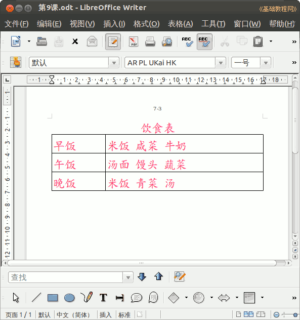

2012-2013 第二学期七年级文字处理和网页教学设计
作者：TeliuTe 来源：基础教程网
九、学会制作表格 返回目录 下一课
（一）教学设计
1、学习目标：学会制表格
2、注意事项：绕过弯来，既不要跳也不要落
3、教学过程：
1）教师准备学案和板书；
2）学生整队进入，开机抄黑板上笔记；
3）教师讲解板书演示操作；
4）学生打指法、日志、完成操作；
5）教师打勾记录学生指法成绩，检查日志和操作；
注：学生抄完笔记就开始打指法、日志，老师讲完后再继续完成；
（二）板书设计(学生笔记)
第9课 学会制作表格
1,表格由行和列组成，小格，单元格。
2,点菜单表格插入表格。
3,输入行数和列数确定。
4,页眉，页脚，保存。
操作图示：

（三）课后记 2013-03-26 16:53
--
准备范例比较麻烦，成绩表是电子表格的知识
时间表、课程表都做过了应该，找个贴近实际的
--
用饮食表来，有些担心最后一节的别饿肚子更饿了
边框线改颜色的，看情况是否加入，内容把握好量
--
把上节的页眉页脚巩固一下，显示比例要不要讲下
这样检查的时候就方便些，看情况来有些多吗
--
--
颜色提了一下，但是都没用，可能是做出来就很满意
一组一组的检查，乱吵的大声训了一下，慢慢养成习惯
--
做完检查完就可以放心玩，要不担心可能错了
举例下面吵“会了”训一顿，惯成毛病以后还会吵
--
插入页码还有些绕，第一次只是插入页脚，第二次才是页码
页码要到字段里插入，有些直接写1，一本书只有一页了
--
中午来一看，风扇没关想着有些健忘了
开窗户一看窗户也没关好，估计是学生又翻进来
--
给班主任说了，去查一下
东西没动什么就是开电脑玩，毛病都是惯出来的
--
查了半天没查出来，去看了下录像回放
原来是另一个班的学生，刚好在反光的位置上看的不是很清楚
--
中午走的时候忘记锁门了，掏钥匙又想什么事就走了
看来做事的时候不能想别的
返回目录 下一课
本教程由86团学校TeliuTe制作|著作权所有
基础教程网：http://teliute.org/
美丽的校园……
转载和引用本站内容，请保留作者和本站链接。